SQL Server Access with Habour ORM - Early Access
 Author: Eric Lendvai
Author: Eric Lendvai
Table of Contents
- Early Access
- Target Audience
- Prerequisites
- Terminology
- GitHub and Source Code
- Installation
- Using VSCODE to Compile the Library and Compile/Run the Examples Applications
- Debugging with VSCODE and DebugView
- Connecting to SQL Backend
- Field Types - Still Composing
- NIL and NULL
- Schema Managment - Still Composing
- Installing PostgreSQL on MS Windows
Early Access
Most of the articles here are released once they are complete.
Since
this is a fairly big initiative, I am making this article visible while
it is being composed, with the hope to receive reviews and contribution
from any seasoned Harbour developer.
The
Harbour_ORM repo also has support for devcontainers in VSCODE, meaning
developing using Docker Desktop and Ubuntu. The current article does not
cover that major enhancement yet.
Target Audience
- Harbour developers interested in developing applications accessing SQL backends like PostgreSQL, MariaDB and MySQL.
- VFP developers converting to Harbour.
Prerequisites
- Set up your development environment, and use all the tools created in the article, How to Install Harbour on Windows.
Library can be used on any platform but this article and test code was created on MS Windows platform. - Basic knowledge of VSCODE (Microsoft Visual Studio Code) is recommended. See article Developing and Debugging Harbour Programs with VSCODE .
- Basic understanding of SQL concepts and SQL servers.
- Setting up and configuring PostgreSQL, MariaDB or MySQL.
Terminology
One of the biggest source of confusion when moving from xBase storage system to server side relational databases is terminology.
xBase
developers mainly only used the terms "Tables", "Fields" and "Records".
VFP developers also have "Database Containers" aka "DBC", a method for
grouping multiple tables ("Free Tables", classic DBFs) together. The
main advantages of DBCs is to extend the definition of tables by
allowing long field names and add table triggers.
Currently
the most popular Relational Database solutions are: MySQL (including
MariaDB), PostgreSQL and MS SQL. I will not include SQLite in this list,
since it is mainly used for local storage or limited multi-user access
(any data writes will lock an entire database). I also did not include
Oracle, since it is loosing market share consistently since 2013 and is
one of the most expensive solutions.
Database:
Many xBase developers use this term for a single DBF table. This used to be the case before relational databases became popular and solutions like MS SQL, MySQL and PostgreSQL came to market.
A "database" is an organized collection of data (Wikipedia). In its most simplistic definition it would be a collection of tables.
But for most vendors is a container that holds all the tables and indexes, the data dictionary describing all the tables, indexes, stored procedure / functions, triggers and views (more on that later).
The SQL Standard call this a "Catalog".
Schema:
This term became used for many concepts.
A "schema" can be used to refer to a description of all the tables, fields, indexes and so on. In this case this would be more like a data dictionary (definition of all tables).
Another use for the term "schema" is to create the concept of namespaces, a kind of single level of folders in a "database".
PostgreSQL and MS SQL have this feature of "schema". More than one table may have the same name, as long as their are stored in a different "schema".
In this article and the actual Harbour ORM, we will usually use the term "schema name" instead of simply "schema".
The default "schema" in PostgreSQL is named "public" and in MS SQL it is "dbo".
MySQL/MariaDB, SQLite do not have the concept of Schema Namespaces.
"Schema Names" can make it easier to deal with access rights, or by functionality. For example you could create "schema names" like: "archives", "logs", "exports" ...
Public:
Many xBase developers use this term for a single DBF table. This used to be the case before relational databases became popular and solutions like MS SQL, MySQL and PostgreSQL came to market.
A "database" is an organized collection of data (Wikipedia). In its most simplistic definition it would be a collection of tables.
But for most vendors is a container that holds all the tables and indexes, the data dictionary describing all the tables, indexes, stored procedure / functions, triggers and views (more on that later).
The SQL Standard call this a "Catalog".
Schema:
This term became used for many concepts.
A "schema" can be used to refer to a description of all the tables, fields, indexes and so on. In this case this would be more like a data dictionary (definition of all tables).
Another use for the term "schema" is to create the concept of namespaces, a kind of single level of folders in a "database".
PostgreSQL and MS SQL have this feature of "schema". More than one table may have the same name, as long as their are stored in a different "schema".
In this article and the actual Harbour ORM, we will usually use the term "schema name" instead of simply "schema".
The default "schema" in PostgreSQL is named "public" and in MS SQL it is "dbo".
MySQL/MariaDB, SQLite do not have the concept of Schema Namespaces.
"Schema Names" can make it easier to deal with access rights, or by functionality. For example you could create "schema names" like: "archives", "logs", "exports" ...
Public:
This term could be used to describe access rights.
In PostgreSQL it is the name of the default "schema (name)". Any newly created database will have a "public" "schema".
Columns / Rows and Fields / Records:
"Columns" and "fields" can be used interchangeably, as does "rows" and "records".
In
all the main documentation and admin tools for the most popular
relational databases, the terms "columns" and "rows" are used the most
often.
Terms used by different products:
MySQL uses "Schema" as a synonym for "Database".
PostgreSQL uses "Schemas" but uses "Databases" to refer to what standard SQL calls a "catalogs."
PostgreSQL uses "Schemas" but uses "Databases" to refer to what standard SQL calls a "catalogs."
The following is a hierarchy of terminology for popular relational database, DBF RDD Harbour/xBase, VFP :
| MySQL | PostgreSQL | MS SQL | Harbour DBF RDD | VFP | |
| 1 | Database | Database | Database | DBC | |
| 2 | Schema | Schema | |||
| 3 | Table | Table | Table | Table | Table |
| 4 | Column | Column | Column | Field | Field |
| 5 | Row | Row | Row | Record | Record |
Cursors:
In MySQL/MariaDB, PostgreSQL and MS SQL, a "cursor" is a variable that holds the definition of a SQL query or other commands returning a set of rows. Cursors are used to read the query result a few rows at a time, instead of downloading the entire result set, avoiding memory overruns.
In VFP a "cursor" is a temporary table, mostly in-memory (overruns are placed in local storage).
They behave like DBF tables with the exception of already supporting long field names.
They can be created via the following 3 methods:
1. Explicitly using the CREATE CURSOR command
2. When calling the local SQL engine SELECT .... INTO CURSOR
3. When calling a remote SQL command using an ODBC connection with the SQLExec function.
In the Harbour ORM, it is an object of the class hb_orm_Cursor and an associated in-memory table (no local storage overruns.)
Since an entire result set will be in-memory, it is advised to use Harbour 64-bit. A future enhancement would be to use backend "cursors" to buffer result sets.
Unlike classic DBFs, long field names are supports, null values can be assigned to fields, and support of auto-increment field is also provided.
An entire section in the article will focus on cursors.
In MySQL/MariaDB, PostgreSQL and MS SQL, a "cursor" is a variable that holds the definition of a SQL query or other commands returning a set of rows. Cursors are used to read the query result a few rows at a time, instead of downloading the entire result set, avoiding memory overruns.
In VFP a "cursor" is a temporary table, mostly in-memory (overruns are placed in local storage).
They behave like DBF tables with the exception of already supporting long field names.
They can be created via the following 3 methods:
1. Explicitly using the CREATE CURSOR command
2. When calling the local SQL engine SELECT .... INTO CURSOR
3. When calling a remote SQL command using an ODBC connection with the SQLExec function.
In the Harbour ORM, it is an object of the class hb_orm_Cursor and an associated in-memory table (no local storage overruns.)
Since an entire result set will be in-memory, it is advised to use Harbour 64-bit. A future enhancement would be to use backend "cursors" to buffer result sets.
Unlike classic DBFs, long field names are supports, null values can be assigned to fields, and support of auto-increment field is also provided.
An entire section in the article will focus on cursors.
GitHub and Source Code
This entire article is the official documentation for the https://github.com/EricLendvai/Harbour_ORM repo.
Download, clone or fork this repo since referrence to its source code will be made throughout this article.
If
you decide to fork the repo, you may still want to monitor this
upstream repo since continuous enhancements and fixes will be provided.
This Harbour_ORM library also needs the https://github.com/EricLendvai/Harbour_VFP repo, or at minimum the compiled Harbour_VFP library.
Using the Harbour_VFP library WILL NOT alter Harbour itself, only add a few vfp_* and el_* functions.
The el_* functions are actually equivalent new hb_* functions being submitted for merge in the core Harbour repo.
Repo folder structure:
- The root folder includes all the files needed to compile the library files.
- The ".vscode" folder include some configuration files used by VSCODE.
- The "Examples" folder is the parent folder for some example programs. It includes a build batch file and debugger global files.
- The "Examples\Cursors" folder contains a workspace for building and testing a program to demonstrate the creation and use of cursors (object + in-memory table). This does not rely on a server backend.
- The "Examples\SQL_CRUD" folder contains a workspace for building and testing a program to demonstrate Schema management, Create, Read (and Query), Update and Delete operations against MariaDB and PostgreSQL servers.
- The "mingw64" and "msvc64" folders are compiled library already compiled for mingw and msvc 64-bit.
Installation
The
following are instructions for 3rd party applications used for/by this
library. The instructions are documented for use under MS Windows.
Please skip any sections if you already have those installed and configured.
Please skip any sections if you already have those installed and configured.
Git
Download git from https://git-scm.com/
Install using all default options.
Install using all default options.
Enhanced Git Prompt in MS Windows (optional)
Instructions to create a better git aware powershell with a colored git prompt that display the branch information and status.
Start Command Prompt "Run as Admin", then >powershell or "Run As Admin" Powershell
From Powershell execute the following:
>Set-ExecutionPolicy -Scope LocalMachine -ExecutionPolicy RemoteSigned -Force
>Install-Module posh-git -Scope CurrentUser -Force
>Import-Module posh-git
>Add-PoshGitToProfile -AllHosts
See: https://github.com/dahlbyk/posh-git
From Powershell execute the following:
>Set-ExecutionPolicy -Scope LocalMachine -ExecutionPolicy RemoteSigned -Force
>Install-Module posh-git -Scope CurrentUser -Force
>Import-Module posh-git
>Add-PoshGitToProfile -AllHosts
See: https://github.com/dahlbyk/posh-git
Example of an Enhanced Git Prompt
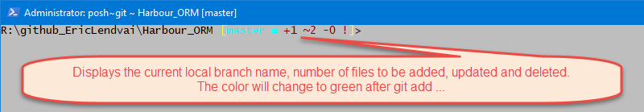
VSCODE and Extensions
Please refer to the article "Developing and Debugging Harbour Programs with VSCODE (Visual Studio Code)"
Amongst all the installation methods, I would recommend using and downloading https://code.visualstudio.com/download
In this case, if you are concerned about monitoring by Microsoft, or automatic updates, simply use the following VSCODE setting:
"telemetry.enableTelemetry": false,
"telemetry.enableCrashReporter": false,
"extensions.autoUpdate":false,
"telemetry.enableCrashReporter": false,
"extensions.autoUpdate":false,
Install at the minimum the following VSCODE extensions:
- "Harbour and xHarbour" By Antonino Perricone
- "Tasks" by actboy168
Harbour and C Compiler
Install Harbour and the C compiler of your choice as per the article "How to Install Harbour on Windows"
I recommend installing Harbour in c:\Harbour and using Mingw64.
The following are the steps I used for installing Harbour in c:\Harbour:
Install Harbour and the C compiler of your choice as per the article "How to Install Harbour on Windows"
I recommend installing Harbour in c:\Harbour and using Mingw64.
The following are the steps I used for installing Harbour in c:\Harbour:
From an Admin Command Prompt:
Created a folder C:\github\Harbour and from there executed
git clone >https://github.com/harbour/core.git
That create a core subfolder (C:\github\Harbour\core) which I copied to c:\harbour
Local PostgreSQL server (optional but recommended)
To install PostgreSQL go to https://www.postgresql.org/download/
At the last step of the install you may want to select to also run "Stack Builder" to install the psqlODBC (64-bit) driver.
Also you can configure pgAdmin to run in Desktop mode.
Check out https://www.pgadmin.org/faq/ the section "What are Server Mode and Desktop Mode?"
See: https://community.wegalvanize.com/s/article/How-to-run-pgAdmin-4-as-native-desktop-app?language=en_US
Also you can configure pgAdmin to run in Desktop mode.
Check out https://www.pgadmin.org/faq/ the section "What are Server Mode and Desktop Mode?"
See: https://community.wegalvanize.com/s/article/How-to-run-pgAdmin-4-as-native-desktop-app?language=en_US
Any PostgreSQL database using UUID fields
Install the pgcrypto extension to provide support for UUID fields. Use the following command while connected as a superuser.
CREATE EXTENSION IF NOT EXISTS pgcrypto;Local MariaDB server (optional but recommended)
MariaDB is almost equivalent to MySQL and was created as a fork from MySQL but not owned by Oracle. See: https://mariadb.com/kb/en/mariadb-vs-mysql-compatibility/
To install MariaDB Server go to https://mariadb.org/download/
MariaDB is almost equivalent to MySQL and was created as a fork from MySQL but not owned by Oracle. See: https://mariadb.com/kb/en/mariadb-vs-mysql-compatibility/
To install MariaDB Server go to https://mariadb.org/download/
The
MariaDB server install also give you the option to install HeidiSQL. It
is an excellent management tool for MariaDB and MySQL. It can also be
used for PostgreSQL, although lack many features of pgAdmin. But one of
the nicest features is the ability to export data out of one database
into an other empty database across connections.
Client Connection Library (ODBC)
Currently
this library use ODBC as a method to connect to SQL servers (Not MS
SQL, but any SQL servers). You only need to install the ODBC Drivers,
but do not need
to setup a DSN (Data Source Name) entry. ODBC drivers are provided for
most OS, including MS Windows, Mac OS and the most popular Linux
distros.
Ensure you match your Harbour bit mode, 32-bit or
64-bit. At this point all my development is done using 64-bit. Even
PostgreSQL only ships 64-bit mode since version 11.
You will need to specify which ODBC driver name should be used to connect to the SQL server of your choice.
If
not specified, "MySQL ODBC 8.0 Unicode Driver" will be used when
connecting to MySQL or MariaDB, and "PostgreSQL Unicode" for PostgreSQL.
At this point this library will only support UTF8 (Unicode) encoding, since this covers all spoken languages.
You can find the driver at the following links:
| MariaDB and MySQL | For all platforms: https://mariadb.com/downloads/?showall=1&tab=connectors&group=mariadbconnectors&product=ODBC%20connector#connectors |
| PostgreSQL | For MS Windows: https://www.postgresql.org/ftp/odbc/versions/msi/ For Linux: search you package manager or build from source, https://odbc.postgresql.org/docs/unix-compilation.html |
Harbour_ORM Library and dependency
Use Git to download the following two repos:
I
usually download those in a \github\<AuthorName> folder than copy
them to c:\Harbour_VFP and c:\Harbour_ORM respectively, but do not
include the ".git" hidden sub-folder.
By doing this technique I can alway re-pull the repos and see what changed before incorporating changes in my other projects.
You could run the following from an Admin Command prompt to automate the process:
C:MD \GitHubMD \GitHub\EricLendvaiCD \GitHub\EricLendvaigit clone https://github.com/EricLendvai/Harbour_VFP.gitgit clone https://github.com/EricLendvai/Harbour_ORM.gitMD \Harbour_VFPMD \Harbour_ORMXCOPY c:\GitHub\EricLendvai\Harbour_VFP c:\Harbour_VFP /sXCOPY c:\GitHub\EricLendvai\Harbour_ORM c:\Harbour_ORM /s
Using VSCODE to Compile the Library and Compile/Run the Examples Applications
The
compilation of this library is best performed from within VSCODE. For
that reason, all VSCODE configuration files are also including in the
repo.
In regards to the Harbour_ORM library
itself, all the source code files needed to compile the library are in
the root folder of the repo. The ".vscode" folder includes some of the
configuration files for VSCODE.
The "hb_orm.code-workspace" file located in the root folder is the VSCODE workspace file you should use to start VSCODE.
First
update any path in the "hb_orm.code-workspace" file and the json files
located in "\.vscode" folder to point to the location where you
installed the source code of Harbour_VFP and Harbour_ORM.
The compilation process use the hbmk2 Harbour tool. The "BuildLIB.bat" will be called by VSCODE tasks.
In
regards to example programs, which demonstrates how to use the
Harbour_ORM, they are located in sub-folders of the "Examples"
folder.
Building these example programs are done in the same manner as the library itself, using VSCODE.
Open any "Examples\*\*.code-workspace" file with VSCODE, to open the examples' workspaces.
Remember
to first update any path in the *.code-workspace file and the json
files located in "\Examples\*\.vscode" to point to the location where
you installed the source code of Harbour_VFP and Harbour_ORM.
Currently in the repos, everything is defaulting to "C:\Harbour_VFP" and "C:\Harbour_ORM"
The compilation process use the hbmk2 Harbour tool. The "\Examples\BuildEXE.bat" will be called by VSCODE tasks.
As
per the installation instructions the "Tasks" VSCODE extension will
display some buttons to help you compile the library and/or
compile/debug/run example programs.
If your open the "hb_orm.code-workspace"
workspace you will be able to compile the library, but not run it. The
actual execution of the library must be done via the examples.
If you intend to debug an example program, you may want to also build in debug mode the library itself.
The
environment is configured in such manner that debug and release build
will be stored in their own folders. Currently all debugging is done
when when using the Mingw64 C compiler.
Release build can be done in MSVC64.
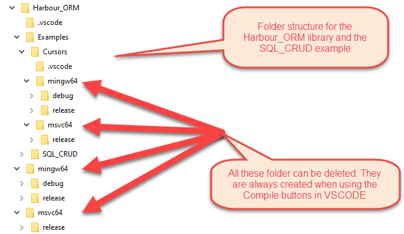
If you are opening one of the example workspace files, you will also be able to run the examples.
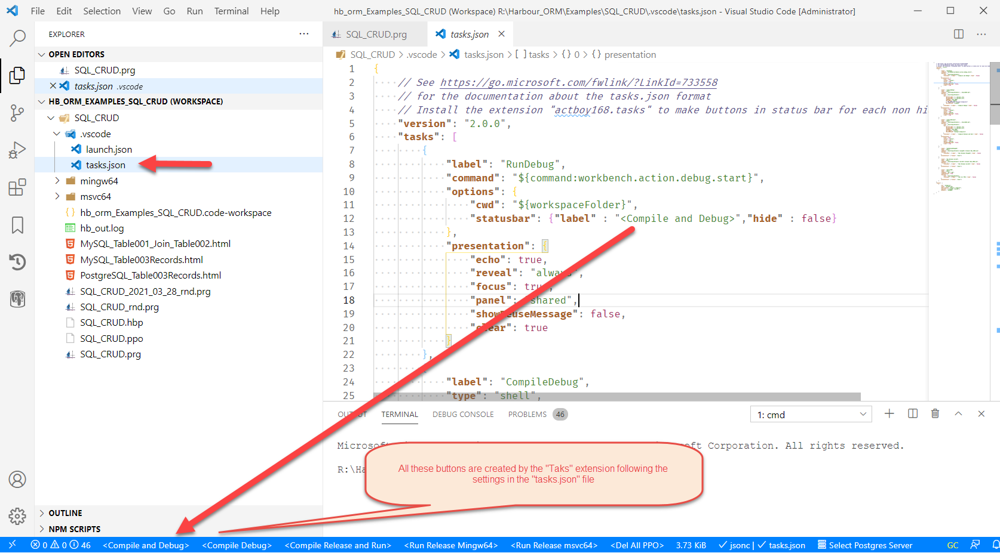
Debugging with VSCODE and DebugView
Debugging
your code is so simple with VSCODE. Beside using the VSCODE method to
setup breakpoints, you can also create code-based explicit breakpoints
with the use of "AltD()" function.
Under MS Windows, you can also send messages to DebugView using the function hb_orm_SendToDebugView(cMessage,[xValue]).
Example of a debugging session:
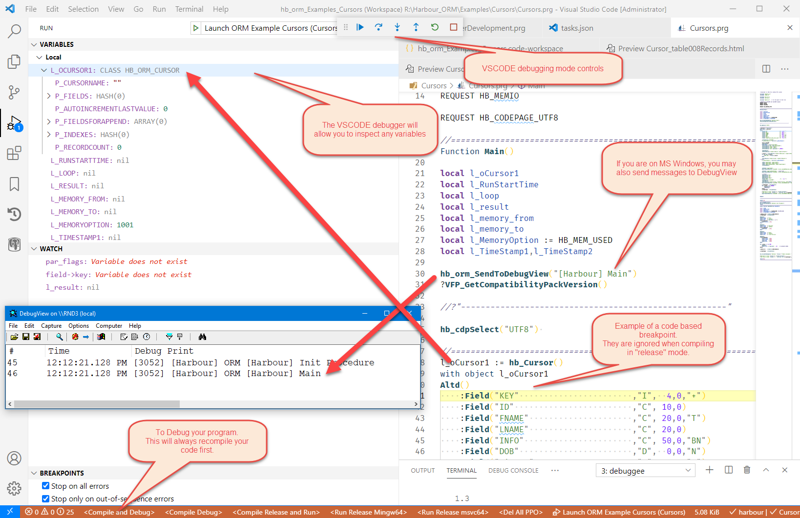
I would recommend starting DebugView with the following settings and using the leading text "[Harbour]" in your messages:

Connecting to SQL Backend
Before using any SQLData objects, a SQLConnect object need to be created and a connection must be initiated.
There
are two ways to tell a SQLConnect object where to connect. Either by
sending all the configuration setting as parameters to the
hb_SQLConnect() constructor or by calling a series of methods before
initiating the actual connections.
The following are examples of both ways to set the configuration and connect:
l_oSQLConnection1 := hb_SQLConnect()with object l_oSQLConnection1 :MySQLEngineConvertIdentifierToLowerCase := .f. :SetDriver("MariaDB ODBC 3.1 Driver") :SetBackendType("MariaDB") :SetUser("root") :SetPassword("password") :SetDatabase("test001") // :SetServer("127.0.0.1") :SetPrimaryKeyFieldName("key") l_iSQLHandle := :Connect() do case case l_iSQLHandle == 0 ?"Already Connected" case l_iSQLHandle < 0 ? :GetErrorMessage() otherwise ?"connection is",l_iSQLHandle endcase ?"MariaDB Get last Handle",:GetHandle()endl_oSQLConnection2 := hb_SQLConnect("PostgreSQL",,,,"postgres","password","test001","set001")with object l_oSQLConnection2 :PostgreSQLIdentifierCasing := HB_ORM_POSTGRESQL_CASE_SENSITIVE :PostgreSQLHBORMSchemaName := "MyDataDic" l_iSQLHandle := :Connect() do case case l_iSQLHandle == 0 ?"Already Connected" case l_iSQLHandle < 0 ? :GetErrorMessage() otherwise ?"connection is",l_iSQLHandle endcase ?"PostgreSQL Get last Handle",:GetHandle() end
For
the list of parameters and list of methods, please review the file
"hb_orm_sqlconnect_class_definition.prg" or the reference section in
this article.
The connections are done using
ODBC drivers, but do not rely on DSN definitions. All ODBC settings are
handle using method calls.
When the :Connect() method of a SQLConnect object is called the property :p_Schema will be initialized with the definition of every tables, fields (columns) and index definition.
This :p_Schema property will help facilitate the auto-casing for tables and fields. This is very useful if you configured the backend server to be case-sensitive.
In your Harbour code you could refer to tables and field in any case since the ORM will adjust the queries and commands to match casing. Due to this feature, you may not define more than one table or field in a table, with the same name in a case-insensitive manner.
For example, if in a table named "Client" you had a column named "DateOfFirstContact", you could refer to that field as "CLIENT.DATEOFFIRSTCONTACT" or "client.dateoffirstcontact" or any other casing.
The :p_Schema property is also used to apply schema migrations (across multiple schema names).
When the :Connect() method of a SQLConnect object is called the property :p_Schema will be initialized with the definition of every tables, fields (columns) and index definition.
This :p_Schema property will help facilitate the auto-casing for tables and fields. This is very useful if you configured the backend server to be case-sensitive.
In your Harbour code you could refer to tables and field in any case since the ORM will adjust the queries and commands to match casing. Due to this feature, you may not define more than one table or field in a table, with the same name in a case-insensitive manner.
For example, if in a table named "Client" you had a column named "DateOfFirstContact", you could refer to that field as "CLIENT.DATEOFFIRSTCONTACT" or "client.dateoffirstcontact" or any other casing.
The :p_Schema property is also used to apply schema migrations (across multiple schema names).
PostgreSQL notes:
The process of loading schema definitions in :p_Schema can take a few seconds for databases with thousands of tables. In PostgreSQL, querying its meta data can be quite slow. For this reason the ORM will cache the definition of all tables and indexes, for all schemas (PostgreSQL Schemas) in the database. A trigger will help monitor structure changes and invalidate the cache. Cache data will be stored in tables named "SchemaCache*".
The process of loading schema definitions in :p_Schema can take a few seconds for databases with thousands of tables. In PostgreSQL, querying its meta data can be quite slow. For this reason the ORM will cache the definition of all tables and indexes, for all schemas (PostgreSQL Schemas) in the database. A trigger will help monitor structure changes and invalidate the cache. Cache data will be stored in tables named "SchemaCache*".
All ORM support tables, including the
structure cache files will be stored in a Schema (PostgreSQL namespace)
named "hb_orm". You may set the property :PostgreSQLHBORMSchemaName to
any other name. This must be done before calling all :Connect() methods.
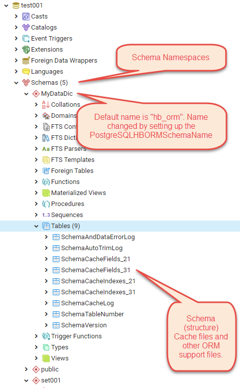
Field Types - Still Composing
As mentioned in the introductions, a few extra fields types exists in this ORM.
When
results are returned into a cursor (in-memory table) some field types
are converted to locally supporting types (hbusrrdd.ch)
For some explanation about datetime and timestamp see xhb-diff.txt in the harbour source code repo.
| ORM Code | ORM Content Type | Length | Decimals | Supported Attributes | Cursor Field Type | Harbour variable types | PostgreSQL Field Type | MariaDB and MySQL Field Type | Warnings/Notes |
| I | Integer | N, + | I - Integer | N - Numeric | integer | INT | |||
| IB | Big Integer | N, + | I - Integer | N - Numeric | bigint | BIGINT | |||
| F | Float | N | F - Float | N - Numeric | real | FLOAT([<len>,<dec>]) | In PostgreSQL No decimal precision. | ||
| Y | Money (4 decimal) | N | Y - Currency | N - Numeric | money | DECIMAL(13,4) Comment field: 'Type=Y' | |||
| N | Numeric | X | X | N | N - Numeric | N - Numeric | numeric(<len>,<dec>) | DECIMAL(<len>,<dec>) | |
| C | Char | X | N, B, T, U, C/Z | C - String | C - Character string | character(<len>) | CHAR(<len>) | ORM uses UTF8 encoding | |
| CV | Variable length char (with max length value) | X | N, B, T, U, C/Z | C - String | C - Character string | character varying(<len>) | VARCHAR(<len>) | ORM uses UTF8 encoding | |
| B | Binary (Same as "R") | X | N | C - String | C - Character string | bytea Comment field: 'Type=B|Length=<len>' | BINARY(<len>) | No code page/encoding. | |
| BV | Variable length Binary (Same as "R" with max length value) | X | N | C - String | C - Character string | bytea Comment field: 'Type=BV|Length=<len>' | VARBINARY(<len>) | No code page/encoding. | |
| M | Longtext (memo) | N, C/Z | M - Memo | C - Character string | text | LONGTEXT | ORM uses UTF8 encoding | ||
| R | Long blob (binary) (Same as "B") | N | M - Memo | C - Character string | bytea | LONGBLOB | |||
| L | Logical | N | L - Logical | L - Boolean | boolean | TINYINT(1) | |||
| D | Date | N | D - Date | D - Date | date | DATE | |||
| TOZ | Time with time zone | N | T - Time | T - TimeStamp | time with time zone or time(<dec>) with time zone | TIME or TIME(<dec>) Comment field: 'Type=TOZ' | |||
| TO | Time without time zone | N | T - Time | T - TimeStamp | time without time zone or time(<dec>) without time zone | TIME or TIME(<dec>) | |||
| DTZ | Date Time with time zone | N | T - Time | T - TimeStamp | timestamp with time zone or timestamp(<dec>) with time zone | TIMESTAMP or TIMESTAMP(<dec>) | |||
| DT or T | Date Time without time zone | N | T - Time | T - TimeStamp | timestamp without time zone or timestamp(<dec>) without time zone | DATETIME or DATETIME(<dec>) | |||
| UUI | UUID (Universally Unique Identifier) | + | C - String | C - Character string | uuid | VARCHAR(36) Comment field: 'Type=UI' | MySQL/MariaDB36 Character Length (32 digits and 4 dashes). PostgreSQL requires pgcrypto extension to be installed. | ||
JS | JSON | C - String | C - Character string | json | LONGTEXT Comment field: 'Type=JS' |
Field Attributes:
You can also a combination of the following codes to add attributes/behaviors to field content:
| Code | Behavior | Used for Tables | Used for Cursors |
| N | Allow Null | X | X |
| + | Auto Increment | X | X |
| B | Binary | No Yet | X |
| T | Trimmed | Always | X |
| U | Unicode | No Yet | No Yet |
| Z | Compressed | No Yet | No Yet |
| C | Compressed | No Yet | No Yet |
| A | Array | X PostgreSQL | Not Yet |
Notes:
- Even though PostgreSQL makes it optional to specify a max length value for "Variable length Chars" and Variable length Binary", since MySQL requires it, so does this ORM.
- To take advantage of "Big Integer" type you must use Harbour 64-bits.
- To make a "C" or "CV" field allow binary content, use the "B" attribute (See below).
- The U, C/Z are not yet implemented. By default all C/CV fields are UTF8 already.
- In PostgreSQL a "bit" type also exists, which is a string series for "0" and "1", not the Binary type. For now the ORM does not support the field type.
- UUID Fields set to not allow null values will have their default value set to get a new UUID value
- On PostgreSQL to allow the generation of UUID values, install the extension "pgcrypto".
NIL and NULL
In
Harbour there is a function hb_IsNull(xValue). It is only valid
when xValue is a "string", "array" or "hash array", and return true if
the length is zero. It has nothing to do with the concept of NULL values
in relational databases.
In Harbour a NIL variable means no
value was assigned to it, similar to what a NULL column (field) value
would be if no value was assigned to it.
The DBF tables in
Clipper and Harbour do not support NULL values in fields. In VFP DBF
tables (since version 3), a NULL value can be assigned to a field, as
long as the field was marked to allow nulls.
In the C language, at least in Object-C, there is a difference between NIL and NULL.
Since
Harbour is mainly used to work on database, and since in this ORM we
are dealing with relational database, we are going to avoid using the
terms NIL, and always talk about NULL.
One of the main
advantages for supporting NULL becomes apparent when issuing SQL SELECT
queries with outer joins, like "left join". The way you can detect if a
"left join" did not find related records (rows) is if all the fields in
the related tables return a NULL value. The easiest is to test if the
primary key in the related (joined) table IS NULL, since primary keys
may never be null.
The Harbour ORM use the Harbour VFP library, in Harbour compatibility mode.
Using xtranslate statements the following declarations are available to your code:
- Any NULL, .NULL. will be processed as a Harbour NIL.
- ISNULL(xValue) will be translated to hb_IsNIL(xValue).
- Avoid using hb_IsNULL. use Empty(xValue) instead, since if behaves the same as hb_IsNULL and works on numeric and any other fields/variable types.
- Empty(NULL) returns true. (In VFP this return false)
Schema Managment - Still Composing
Managing deployment of an app that relies on PostgreSQL or MySQL/MariaDB can be tricky.
You need to ensure your schema version (table structures and indexes) match the application you deploy.
There
are several tools that already exists for creating tables and indexes,
and updating their structure. Products like Flyway, Liquibase and
dbdeploy run using Java or .Net. Most require a fixed sequence of script
to migrate schema. Meaning you must change your schema without skipping
a particular version.
A long time ago I
decided on a few business rules about how to handle data structures.
These rules allow me to simplify the process and make my deployments
more robust and are the main reason I created a Harbour based migration
set of features.
Schema Rules:
- All tables must have a primary key that is an auto-increment integer or big integer.
- An incremental schema version number is recorded with the data, and the application specify the version it needs.
- Fields don't change types.
- Indexes don't change definition. A new index name can be created with a new index expression.
- Tables and Fields are never deleted via automated migration process (will define that process later).
- Tables and Field are never renamed. For example if a field name has to change, a new field is created with the new name, and data is copied from the old field to the new field. Deleting the old field will block downgrading schema.
The following is the list of steps a migration should have.
Migration Process Steps:
- Read the current version of the schema.
- If same as the one the application expect, exit the migration process.
- Issue an Application Lock to the schema to other users.
- Compare the current schema definition with what the application needs and generate SQL commands to alter the structure.
- Apply the generated migration code.
- Starting from the on-file database version number, start applying data content transformations, like initializing field content or moving data into new fields. Optionally delete old tables and fields, but this will need to prevent rollbacks.
- As we apply data version specific changes, record the version we completed. Reviewing some actual code will make this step clearer.
- Remove any Application Locks.
Based
on the Schema Rules and Migration Process steps I usually embed the
migration process inside my applications. Updating an application will
almost always trigger a schema migration. When an application starts, it
will always check the schema version of the database is at least the
version it expects.
All schema migration
functions are implement as methods of a SQLConnect object. For the
purpose of this documentation, let's call it l_oSQLConnection1.
The
following is a list of methods that can be used to implement all the
steps of the previously defined "Migration Process Steps".
1.
l_oSQLConnection1:GetSchemaDefinitionVersion(par_cSchemaDefinitionName)
. The par_cSchemaDefinitionName can be any text, for example "main". In
theory you could split into multiple modules your application, and do
the same for schema management. The ORM will maintain a table named "SchemaVersion" to record the current version numbers.
3.
l_oSQLConnection1:Lock("SchemaVersion",1). The first parameter is a
table name, "SchemaVersion" is a ORM support table, and 1 is a key
value. The record does not have to exist, just all the instances of your
application should standardize on a key number, and that is the reason I
choose 1. It is up to you about how to handle notification to users in
case the lock was not granted, and how to tell them that a maintenance
is in progress.
4. and 5. Create a variable,
for example l_SchemaDefinition1 (as demonstrated in
"\Examples\SQL_CRUD\SQL_CRUD.prg") and call
l_oSQLConnection1:MigrateSchema(l_SchemaDefinition1).
This method returns an array {nResult,cSQLScript,cLastError} where:
- nResult could be 0 = Nothing Migrated, 1 = Migrated, -1 = Error Migrating
- cSQLScript is the SQL script that was generated on the fly and actually executed
- cLastError if the script failed, this will have an error text explaining the failure.
6.
and 7. Use
l_oSQLConnection1:SetSchemaDefinitionVersion(par_cSchemaDefinitionName,par_iVersion)
after every version specific transformations. See 1. about
par_cSchemaDefinitionName, and par_iVersion will be your new database
schema version.
8. l_oSQLConnection1:Unlock("SchemaVersion",1), see 3.
In
regards to the :p_Schema property (the one that stores the schema
structure of the entire database you connect to), and the parameter you
provide to the :MigrateSchema() method, they are very similar.
The
first differences between those two is that :p_Schema covers all tables
in the database, and SchemaDefinition parameter may only represent some
tables, since more than one :MigrateSchema() can be applied to a
database (like program module specific tables).
The second
difference is that the :p_Schema property is already specific to the
backend you connect to, while the SchemaDefinition parameter may contain
definitions specific to a particular backend. For example you may want a
certain field or index to only exists in PostgreSQL and not in MySQL,
or vice versa.
Structure of a SchemaDefinition variable used by the MigrateSchema method:
In
the following explanation I will use a hypothetical variable
l_Schema to describe the structure of SchemaDefinition variables.
First
of all l_Schema is a hash array where the keys are the table names.
Then each value is a two element array. The first will contain a hash
array of field definitions, the second another hash array of index
definition or null (NIL) if the table has no indexes. Indexes on the
primary key for every tables is not listed as one of the index
definitions.
The field definition hash array has the field
names as keys and the value can be an array defining the field
attributes, or an array of arrays where the first dimension tell the
kind of backend this relates too.
The index definition
hash array, if exists, has the index names as keys (name must be unique
for current table) and the value is similar in concept to the field
definition hash arrays.
I know this can be a
little tricky to visualize, so let's review an actual implementation of
this l_Schema variable (from the method UpdateORMSupportSchema() class
hb_orm_SQLConnect).
At line {{TableSchemaVersion}} we are defining the ORM support table "SchemaVersion"
Line
{{FieldDefinitionArray}} is an example of a field definition that
should exist for any backend. Field definition arrays have the following
elements:
- Backend Type. You may use the pre-processor defintions HB_ORM_SCHEMA_MYSQL_OBJECT and HB_ORM_SCHEMA_POSTGRESQL_OBJECT (defined in hb_orm.ch)
- Field Type. See "Field Type" section in this article for the valid list.
- Field Length.
- Field decimal precision.
- Field Attributes. Optional. String can include more than one attribute. See "Field Type" section in this article for the valid list.
All element of the field definition array must be defined, except that the first one may be null (NIL).
Line {{IndexDefinitionsArray}} is the start of index definitions for the table "SchemaTableNumber".
Index definition arrays have the following elements:
- Backend Type. (Same as Field Definitions)
- Index Name (leading table and schema name (PostgreSQL only) and trailing "idx") will be added in the actual database.
- Is Unique (to enforce unique entries.) (I never had to use this setting before, since I wanted to detect non unique entries.)
- Algorithm (depend of backends, refer to PostgreSQL/MySQL/MariaDB documentation)
All element of the index definition array must be defined, except that the first one may be null (NIL).
Here is an example of how pgAdmin (PostgreSQL) presents the structure of the table "SchemaTableNumber".
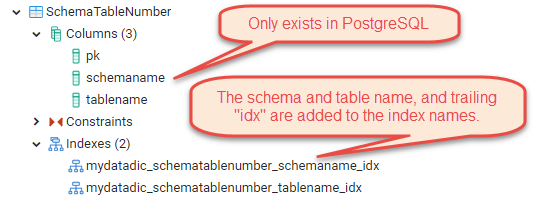
local l_Schema := ; {"SchemaVersion"=>{"Fields"=>; {"pk" =>{, "I", 0, 0,""}; ,"name" =>{{HB_ORM_SCHEMA_MYSQL_OBJECT ,"CV",254, 0,},; {HB_ORM_SCHEMA_POSTGRESQL_OBJECT, "M", 0, 0,}}; ,"version"=>{, "I", 0, 0,}}; ,"Indexes"=>; NIL}; ,"SchemaAutoTrimLog" => {"Fields"=>; {"pk" =>{ , "IB", 0, 0,"+"}; ,"eventid" =>{ , "C",HB_ORM_MAX_EVENTID_SIZE,0,"N"}; ,"datetime" =>{ ,"DTZ", 0, 0,}; ,"ip" =>{ , "C", 43, 0,}; ,"schemaname" =>{HB_ORM_SCHEMA_POSTGRESQL_OBJECT , "M", 0, 0,};,"tablename" =>{{HB_ORM_SCHEMA_MYSQL_OBJECT , "CV",254, 0,},; {HB_ORM_SCHEMA_POSTGRESQL_OBJECT, "M", 0, 0,}}; ,"recordpk" =>{ , "IB", 0, 0,}; ,"fieldname" =>{{HB_ORM_SCHEMA_MYSQL_OBJECT , "CV",254, 0,},; {HB_ORM_SCHEMA_POSTGRESQL_OBJECT, "M", 0, 0,}}; ,"fieldtype" =>{ , "C", 3, 0,}; ,"fieldlen" =>{ , "I", 0, 0,}; ,"fieldvaluer" =>{ , "R", 0, 0,"N"}; ,"fieldvaluem" =>{ , "M", 0, 0,"N"}}; ,"Indexes"=>; NIL}; ,"SchemaAndDataErrorLog" => {"Fields"=>; {"pk" =>{ , "IB", 0, 0,"+"}; ,"eventid" =>{ , "C",HB_ORM_MAX_EVENTID_SIZE,0,"N"}; ,"datetime" =>{ ,"DTZ", 0, 0,}; ,"ip" =>{ , "C", 43, 0,}; ,"schemaname" =>{HB_ORM_SCHEMA_POSTGRESQL_OBJECT , "M", 0, 0,"N"}; ,"tablename" =>{{HB_ORM_SCHEMA_MYSQL_OBJECT , "CV",254, 0,"N"},; {HB_ORM_SCHEMA_POSTGRESQL_OBJECT, "M", 0, 0,"N"}}; ,"recordpk" =>{ , "IB", 0, 0,"N"}; ,"errormessage" =>{ , "M", 0, 0,"N"}; ,"appstack" =>{ , "M", 0, 0,"N"}}; ,"Indexes"=>; NIL}; ,"SchemaTableNumber" => {"Fields"=>; // Used to get a single number for a table name, to be used with pg_advisory_lock() {"pk" =>{ , "I", 0, 0,"+"}; // Will never have more than 2**32 tables. ,"schemaname" =>{HB_ORM_SCHEMA_POSTGRESQL_OBJECT , "M", 0, 0,}; ,"tablename" =>{{HB_ORM_SCHEMA_MYSQL_OBJECT , "CV",254, 0,},; {HB_ORM_SCHEMA_POSTGRESQL_OBJECT, "M", 0, 0,}}}; ,"Indexes"=>; {"schemaname" =>{HB_ORM_SCHEMA_POSTGRESQL_OBJECT,"schemaname",.f.,"BTREE"}; ,"tablename" =>{ ,"tablename" ,.f.,"BTREE"}}}; }
Installing PostgreSQL on MS Windows
This section is only to assist you if you want to install a local PostgreSQL server on your development machine.
The instructions were created on a Windows 10 Pro machine 64-bit.
Download PostgreSQL 13 64-bit (no 32-bit is available) or newer:
https://www.enterprisedb.com/downloads/postgres-postgresql-downloads and use the Windows x86-64 Download button for PostgreSQL 13 or higher.
One
of the only suggestions for using different than default settings
during install, is to install the actual PostgreSQL data files not in a
sub-folder of C:\Program Files\.
Instead of "C:\Program
Files\PostgreSQL\13\data" I usually create a folder
"C:\PostgreSQL_Data\13" and specify it for the "Data Directory" setting.
The following are screen shots of the PostgreSQL server install and the ODBC driver.
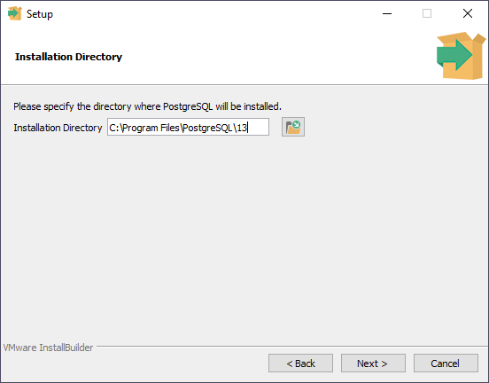
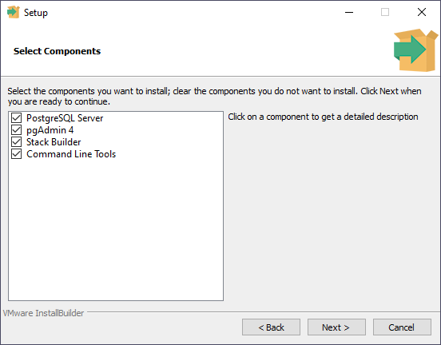
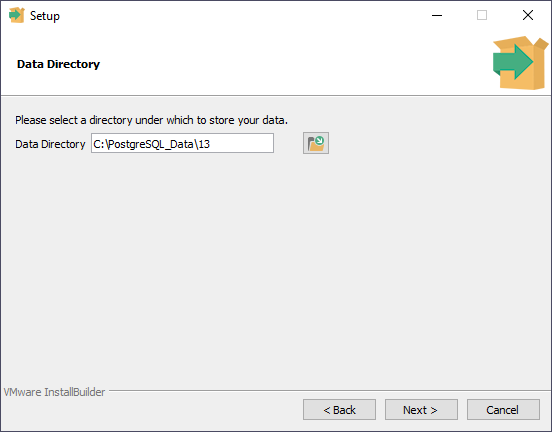
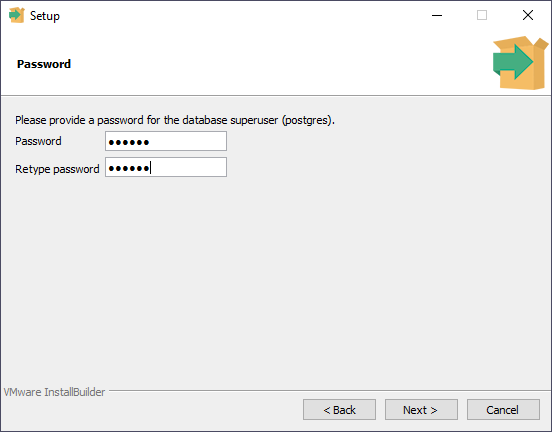
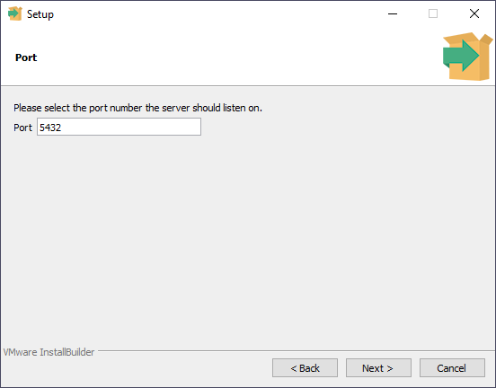
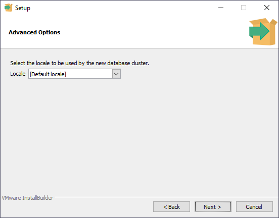
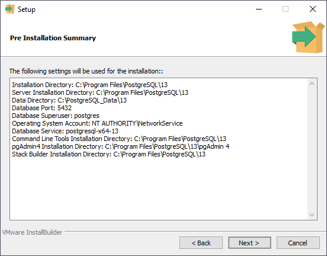
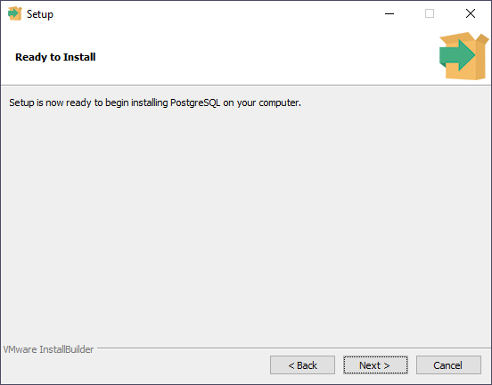
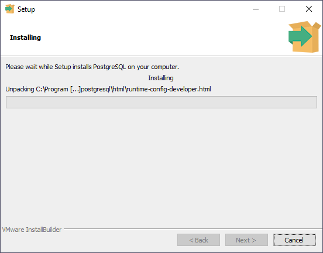
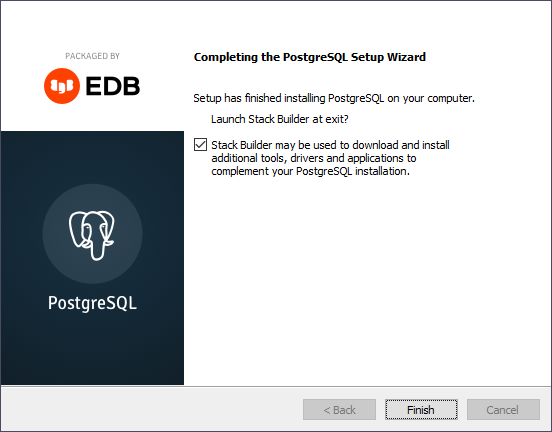
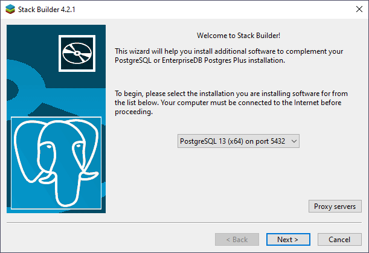
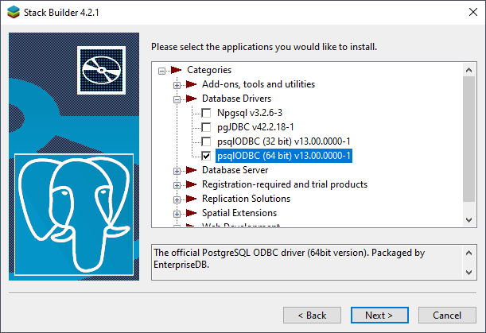
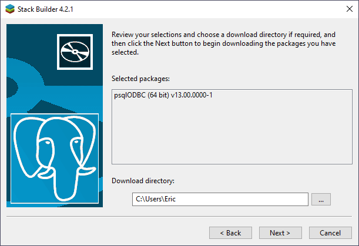
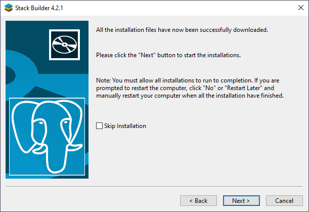
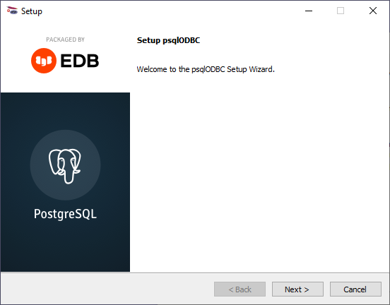
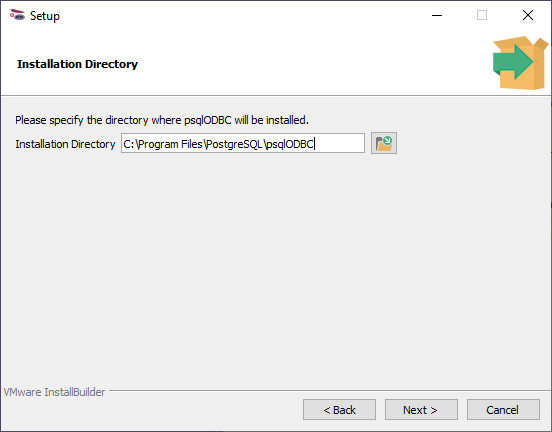
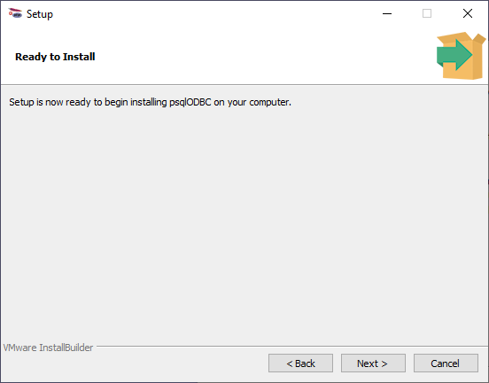
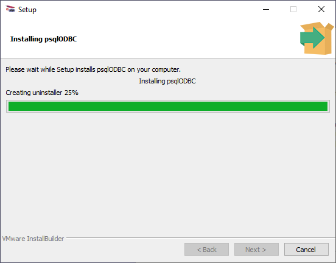
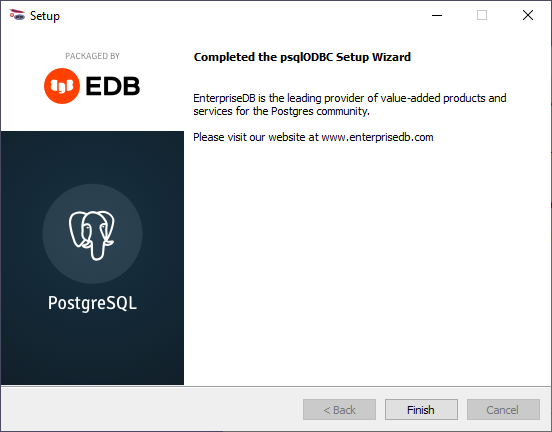
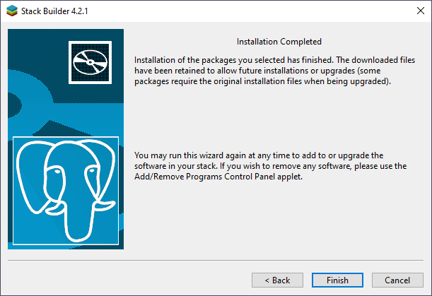
The browser did not close this tab. It may have been opened directly instead of from the Articles list. Use Back to Articles.